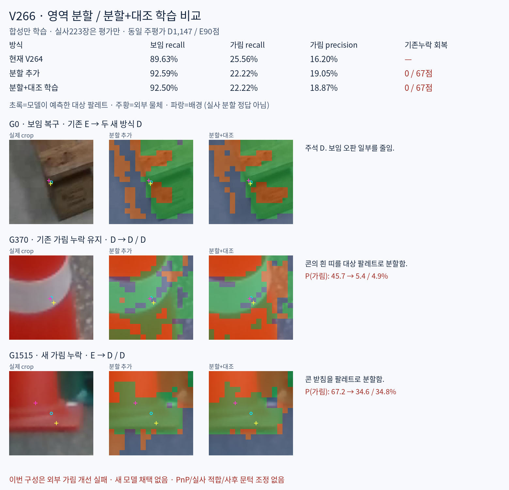

이번 구성은 외부 가림 개선에 실패했습니다. 보임 recall은 올랐지만 기존 누락67점은 한 점도 회복하지 못했고, 맞히던 가림3점도 추가로 놓쳤습니다. 새 모델을 채택하지 않았으며 이 결과 뒤 추가 학습·threshold 변경은 없습니다.
초기 query·crop·동결 DINO 특징·heatmap 위치는 유지했습니다. 분할 두 방식은 동일23,204개 추가 파라미터, 같은 초기값·FIT 표본·1,000업데이트입니다. 차이는 픽셀 대조 손실0.1 추가입니다. 현재 V264는 저장된 기존 모델이며, 분할 추가와의 차이에는 추가 용량·감독·업데이트도 포함됩니다. CLIP Surgery 자체를 실행한 실험은 아닙니다.
학습 전 조건 · 재현 안내 · 실제97사례 / 외부 가림90점 전체 · 합성 RGB·분할 정답·예측

혼동행렬 각 행의 열은 D/E/U입니다. D=보임, E=외부 가림, U=보류. 비율은 %이고 recall은 U를 분모에 포함합니다. 전체1784 query중 입력 불가45점은 모든 방식에서 그대로 U입니다. 아래 PRIMARY1237점에서는 U=0입니다. 자기 가림은 E로 합치지 않았습니다.
| 방식 | D→D/E/U | E→D/E/U | D precision | D recall | E precision | E recall | E F1 | 보류율 |
|---|---|---|---|---|---|---|---|---|
| 현재 V264 | 1028/119/0 | 67/23/0 | 93.88 | 89.63 | 16.20 | 25.56 | 19.83 | 0.00 |
| 분할 추가 | 1062/85/0 | 70/20/0 | 93.82 | 92.59 | 19.05 | 22.22 | 20.51 | 0.00 |
| 분할+대조 학습 | 1061/86/0 | 70/20/0 | 93.81 | 92.50 | 18.87 | 22.22 | 20.41 | 0.00 |
| 방식 | D→D/E/U | E→D/E/U | D precision | D recall | E precision | E recall | E F1 | 보류율 |
|---|---|---|---|---|---|---|---|---|
| 현재 V264 | 510/106/0 | 18/11/0 | 96.59 | 82.79 | 9.40 | 37.93 | 15.07 | 0.00 |
| 분할 추가 | 541/75/0 | 18/11/0 | 96.78 | 87.82 | 12.79 | 37.93 | 19.13 | 0.00 |
| 분할+대조 학습 | 540/76/0 | 18/11/0 | 96.77 | 87.66 | 12.64 | 37.93 | 18.97 | 0.00 |
| 방식 | D→D/E/U | E→D/E/U | D precision | D recall | E precision | E recall | E F1 | 보류율 |
|---|---|---|---|---|---|---|---|---|
| 현재 V264 | 518/13/0 | 49/12/0 | 91.36 | 97.55 | 48.00 | 19.67 | 27.91 | 0.00 |
| 분할 추가 | 521/10/0 | 52/9/0 | 90.92 | 98.12 | 47.37 | 14.75 | 22.50 | 0.00 |
| 분할+대조 학습 | 521/10/0 | 52/9/0 | 90.92 | 98.12 | 47.37 | 14.75 | 22.50 | 0.00 |
36개 평가군별 전체 표 · 자기 가림 별도 응답 · 1784점 행별 결과 · 가림90점 전이
분할 / 분할+대조 모두 회복0·잔존67·새 누락3점입니다. 새 누락은 정사각형 G1515·G1536·G1677입니다. 전체1784개에서도 새 E 발견은 없고 변경은 기존 E→D51/50점뿐입니다. 전체 정확도 상승만으로 외부 가림 개선이라고 해석할 수 없습니다.
① 분할 전이: G370에서 콘의 몸체 일부는 외부 물체로 잡지만 흰 띠는 팔레트로 나눕니다. G908·G1515에서도 콘의 받침·경계가 팔레트와 이어집니다. 한 콘의 표면을 같은 외부 물체로 일관되게 묶지 못했습니다. 실사에는 dense pixel 정답이 없어 분할 IoU를 주장하지 않습니다. G996은 사용자 판단과 기존 E 주석이 다른 사례로 유지하며 명백한 실패 근거로 단정하지 않습니다.
② 분할→native 가림 판정: 합성 DEV의 첫 가림 누락 source1928은 q주변 외부 물체 확률이 약75/73%인데도 두 방식이 모두 D입니다. 정답 분할에 가깝더라도 그 정보를 가림 판단으로 연결하는 처리도 실패할 수 있습니다. G370에서도 owner 정보를 강제로 전부 외부 물체로 바꾸는 사후 진단은 E를 회복하지 못했습니다. 이 가상 descriptor 조작은 배포 규칙·성능 개선으로 채택하지 않았습니다.
해석: 합성 학습에서는 기존 분류기만으로 BCE가 매우 작아, 추가 분류기가 기존 점수를 강하게 따르는 경로가 남아 있습니다. 위 관측은 합성→실사 분할 전이와 최종 판정 양쪽의 병목을 지지합니다. 다른 분할 방법 전체의 불가능성을 입증하지는 않습니다. 후속 검증을 한다면 합성의 콘 전체·흰 띠·받침 및 팔레트/가리는 물체의 역할 교대와 같은 점의 가림 전후 쌍을 충분히 구성하고, 분할 정보가 실제 결정을 바꾸는지부터 확인해야 합니다. 이번 비교에서 추가 fit은 두 번으로 끝냈습니다.
110개 base / 4개 scene variant / 두 초기 query 구성으로7040행입니다. FIT86개 base5504행, DEV24개1536행이며 base·원영상 경로·원영상 SHA 중복0입니다. 실제 D/E 학습 가능점은 FIT D4572/E188, DEV D1288/E56입니다. D/E를16개씩 뽑는 동일 학습 순서를 사용했습니다. 자기 가림·불명확 라벨은 E로 바꾸지 않았습니다.
렌더러의 part_id0…18=대상,999=외부 물체,-1=배경을 사용했습니다. 영상 밖·모호함은 무시합니다. 외부 물체가 crop에 있다는 이유만으로 키포인트 E를 부여하지 않고, 기존 native D/E 정답을 유지했습니다. 정답 지도는 원래 crop과 같은96샘플→224resize→14평균으로16×16에 맞췄습니다. 실제 학습 FIT에서 외부 물체의 알려진 토큰 질량은1.31%이며, 합성 FIT만으로 역제곱근 클래스 가중치를 고정했습니다.
| 방식 | SYNDEV CM(D/E/U) | D recall% | E recall% | 외부 물체 분할 IoU% |
|---|---|---|---|---|
| 현재 V264 | [[1279, 9, 0], [2, 54, 0]] | 99.30 | 96.43 | — |
| 분할 추가 | [[1281, 7, 0], [3, 53, 0]] | 99.46 | 94.64 | 65.88 |
| 분할+대조 | [[1281, 7, 0], [3, 53, 0]] | 99.46 | 94.64 | 67.43 |
분할 IoU는 합성16×16 토큰의 fractional area 기준입니다. 실사 성능이 아닙니다. 대조 학습으로 합성 외부 물체 IoU는 소폭 올랐지만 실사 가림 회복으로 연결되지 않았습니다.
실사223장의 이미지·주석·파생 통계로 새 모델·문턱·체크포인트를 적합하지 않았습니다. 두 final을 먼저 동결하고 모든1784 예측을 저장한 뒤 주석을 결합했습니다. 다만 이223장은 여러 차례 본 개발 평가 자료로, 독립 블라인드 검증은 아닙니다. 원래 주석과 native 대응·위치 출처를 유지했습니다. 숨은 E의 주석 좌표는 직접 보이는 위치 정답과 다릅니다.
독립36행 수치 검산 · 데이터 독립 검토 · 학습 독립 검토 · CPU 예측 재현 · 지표 바이트 재현 · 분할 정보 사용 진단 · 학습 전 수치 검사 수정 기록
추가 학습2회/총2000업데이트. 새 backbone·위치 모델 학습·PnP·실사 적합·사후 문턱 조정0입니다. CPU에서 전체1784개 분류 출력을 재현했고, 고정32개 입력의 전체 dense forward도 검산했습니다. 원래1.38GB 합성 특징과350MB 실사 특징은 원본 SHA·경로를 기록하고 Git에서 제외하며, compact 출력/검산용 입력을 제공합니다.